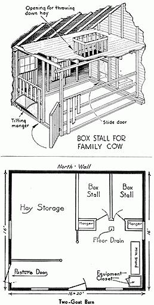

"A small, well balanced collection of livestock can contribute forty to forty-five per cent of the average family food budget. Contrast this to the fifteen to twenty per cent that the home garden and orchard can supply. . ." HOW TO LIVE IN THE COUNTRY WITHOUT FARMING. SURPRISING as it seems there are in this country about 5 million families keeping a family cow or goats. Yet I don't believe there is $100 a year spent by anybody promoting the idea of keeping a cow or goats for the family's own milk supply.
Obviously, if over 5 million families in this country are producing their own milk (this figure does not include any commercial dairy with more than three cows) it must be a sound practice.
As a matter of fact producing your own milk is actually so economically sound, so basic in good times or bad, so widespread a practice across the width and breath of our country, and so simple to do that until recently there has been no book available to tell a city man moving to the country the few things he ought to know to supply his family with milk and dairy produce successfully.
There are in the United States a total of over 27 million milking cows and goats - approximately one per family. Your family, if "well-nourished", is already using the complete milk supply of at least one cow. One of the first things a family should decide when it moves to the country is whether it is going to take over the care of a cow or goats or continue to go on paying somebody else to do this.
Cow and goat milk differ in many minor respects but in only this one important aspect: goat milk is naturally homogenized - the cream does not rise. But the cream can be extracted with a separator. A minor difference is in color; goat milk is whiter than cow milk. Butter and cheese can be produced from goat milk just as from cow milk.
Whether you choose to keep a cow or a couple of goats should be decided on the basis of how much milk your family can use, how much time your family can make available for milking, feeding, caring for your dairy - that includes butter, cheese, and ice-cream making if you keep a cow - and how much and what type of land you have available.
The following two chapters on goats and a family cow will, we hope, help you decide whether or not you'd like to produce the dairy products your own family needs.
|
 |
|
|